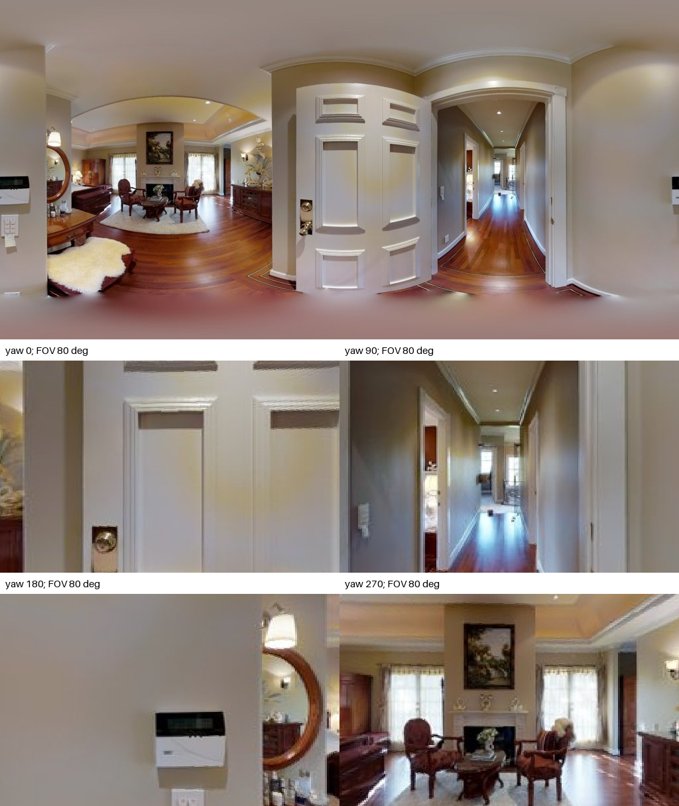
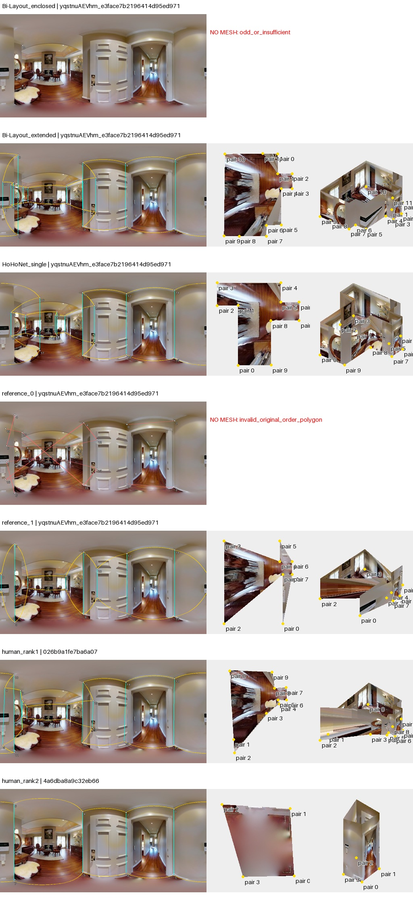
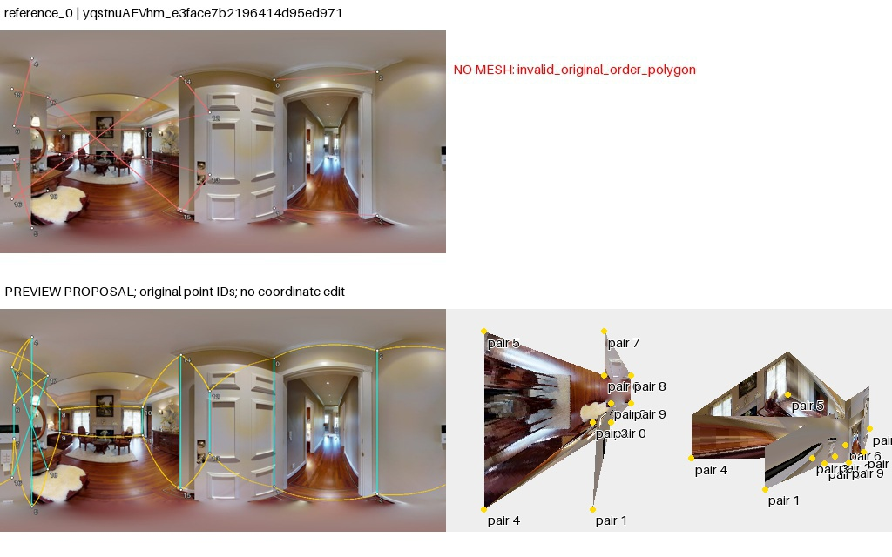

点序复查：旧失败图红线为脚本直连诊断，不是作者墙边证据。导出列表不等于已核实的邻接；重排仅是假设。50图核查与勘误
yqstnuAEVhm_e3face7b2196414d95ed97151aa13058
AI建议；人工最终判断为空。先看原图，再展开布局。图中3D采用单位相机高度、单全景回投影；不是扫描真值。
原始PNG · 2048×1024；点击图片查看原尺寸。下面的旧拼图仅作概览。

客厅与窄走廊之间，开门遮住部分墙，客厅壁炉、家具遮挡地脚；门框位置清楚，纳入客厅还是只取连接区是范围问题。
左窗原始几何，右窗为工具的约束拟合诊断；拟合结果不等于正确标注。无法读取的点组保留失败。高清显示升级未重新裁定旧观察。

enclosed只有退化输出，不能给双头差异。extended与HoHo纳入客厅；两个人类簇显示复杂客厅范围与简化连接区的明显差别，另一参考原序自交。
待人工判断：先明确当前连接区与客厅的范围；退化头不能参与双头趋同判断。
00_Bi-Layout_enclosed：unresolved_no_proposal；原始失败叠图已阅读；无法仅用保守点序调整解决，未生成替代网格。
03_reference_0：reject_as_interpretive_preview；中央门扇遮住墙体，左侧客厅与右侧走廊形成复杂连通。参考0旧重排仍在左侧产生高尖刺和斜接，不能据此解释范围，维持拒绝该候选；enclosed输出退化也无法靠排序补点。真人不同形状不能自动归为两种有效答案。
